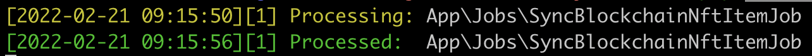
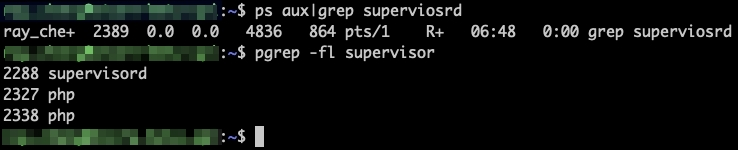

Laravel Queue 使用
使用佇列，讓不需要馬上處理的任務延遲處理

Queue 臺灣這邊稱作「佇列」，中國那邊的翻譯會用「隊列」
用處是將一個耗時且不需要即時完成的任務延遲處理，例如寄送電子郵件
使用者不需要等寄信成功才能進行下一步操作，這樣可以讓應用程式對網頁請求有更快的反應
開始之前先吐槽一下：真的有人講「佇列」嗎？平常聽到都是直接講 Queue，會不會講佇列反而沒人懂
所以底下都會直接講 Queue 不會講佇列 eue 算 uwu 的一種變體嗎
前置作業
在 Laravel 中支援多種 Queue 的驅動
- Database
- Redis
- Amazon SQS
如果在本機測試，可以將.env中設定成
QUEUE_CONNECTION=sync
如此就會在送出任務後馬上執行，這樣對於測試 Queue 的程式碼會比較方便
至於以下會使用database做為驅動做示範
QUEUE_CONNECTION=database
建立 Queue 用的表
因為 Queue 是 Laravel 提供的功能，所以可以直接藉由指令建立用來紀錄待執行的 Queue 資訊的資料表：Jobs
php artisan queue:table
php artisan migrate
建立 Job 程式檔案
可以自行建立或是透過指令
php artisan make:job SyncBlockchainNftItemJob
這時候會在路徑下產生檔案app/Jobs/SyncBlockchainNftItemJob.php
寫 Job 程式邏輯
就修改剛剛的SyncBlockchainNftItemJob.php，主要功能寫在handle()裡面
例如：
public function handle()
{
if ($this->userId) {
Artisan::call("nft-items:sync $this->userId");
}
}
呼叫一個 Artisan 指令，讓他執行一些東西
需要的參數可以在 Job 程式檔案中開頭的__construct初始化，未來建立 Queue 任務時作為傳入參數使用
protected $userId;
public function __construct($userId)
{
$this->userId = $userId;
}
呼叫 Job 建立任務
現在 Job 準備好啦，要從 Controller 呼叫的話怎麼用呢？
引入 SyncBlockchainNftItemJob 之後，在想建立任務的地方使用dispatch分派進進指定的 Job 中
$this->dispatch(new SyncBlockchainNftItemJob($user->id));
// 或是更簡潔一點
SyncBlockchainNftItemJob::dispatch($user->id);
啟動 Queue Worker
如果剛剛不是使用sync作為驅動，則 Queue 是不會被執行的！
需要使用指令告訴 Queue 開始工作
php artisan queue:work
要特別注意的是 Queue Workers 一旦啟動後，程式碼有變更時並不會被更新
在部署階段，記得使用指令重啟 Queue worker
否則會持續執行舊版的程式！
php artisan queue:restart
檢查啟動狀態
ps -ef|grep queue:work
查看執行狀況
執行 Controller 的程式碼會發現
當 Queue 被觸發後會在jobs這張表新增一筆紀錄
而執行時終端機也會有對應的顯示內容

如果看到Processed代表已經執行完成，這時候jobs中的記錄會被移除
Supervisor
當 Queue 在運行的時候可能有各種情況造成 Queue 出現致命錯誤，如此的話就無法執行任務
官方推薦使用 Supervisor
來管理
當 Queue 非預期情況下停止動作，Supervisor 會根據設定檔重啟 Queue 服務
達到讓 Job 可以常駐執行的目的！
映像檔安裝套件
FROM php:7.4-fpm
RUN apt-get install supervisor
CMD /var/www/html/_scripts/cron.sh
我們最後一行 CMD 執行了一個 cron.sh 當作啟動點，等等會用到
Supervisor Config
加入檔案在自己喜歡的位置
# supervisord.conf
[program:laravel-worker]
process_name=%(program_name)s_%(process_num)02d
command=php /var/www/html/artisan queue:work --sleep=90 --tries=3
autostart=true
autorestart=true
startsecs=5
user=root
numprocs=3
redirect_stderr=true
stdout_logfile=/var/www/html/storage/logs/supervisord.log
stopwaitsecs=3600
[supervisord]
logfile=/var/log/supervisor/supervisord_main.log
pidfile=/var/www/html/storage/logs/supervisord.pid
[supervisorctl]
啟動 Supervisor
在專案中建立剛剛用的_scripts/cron.sh檔案，並且掛載到容器的/var/www/html路徑下
#!/usr/bin/env bash
cd /var/www/html
supervisord -c ./docker/cron/supervisord.conf # 使用指定路徑的設定檔啟動 supervisord
php /var/www/html/artisan schedule:work # 順便啟動 cronjob
當 Dockerfile 經由CMD執行 shell script 的時候，可以視為執行了
sh _scripts/cron.sh
我們在cron.sh裡面做了三件事
- 跳到容器的 /var/www/html 路徑中
- 使用指定的 config 來啟動 supervisord 服務
- 執行 php artisan schedule:work
如此一來就可以啟動 supervisord 以及 cronjob 服務
檢查 Supervisor 運行狀態
可以透過指令來確定 supervisord 是否正在執行
pgrep -fl supervisord
# 或是
ps aux|grep supervisord
若是出現錯誤訊息顯示ps或是pgrep指令不存在，則需要先透過指令安裝套件
apt-get update && apt-get install procps
若是看到有出現supervisord則代表已經在運行中了
